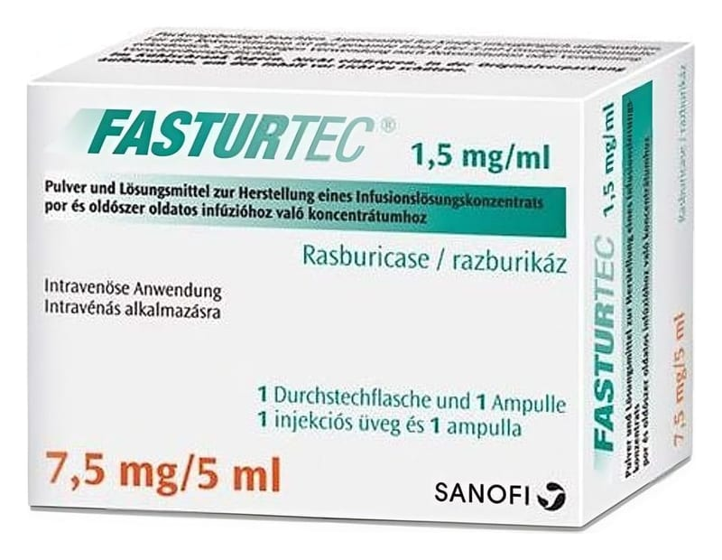

Fasturtec 7,5 mg/5 ml Infizyonluk Çözelti İçin Toz Ve Çözücü, 1ADET

Ne için kullanılır
KT · Bölüm 1FASTURTEC bir kutuda 1 adet 7,5 mg beyaz-kırık beyaz renkte ve pellet şeklinde toz Rasburikaz içeren flakon ve 1 adet 5 mL renksiz ve berrak sıvı çözücü içeren ampul ile sunulmaktadır. Toz, ambalajın içinde bulunan çözücü ile çözülmelidir.
Kemoterapi (kanser tedavisi) görmüş ya da görmekte olan hastalarda kanser hücreleri tahrip olduğunda kanda dolaşan ürik asit seviyesinde belirgin bir artış görülebilir. FASTURTEC, bu yüksek seviyedeki ürik asit miktarını düşürmek veya kanda dolaşan ürik asit miktarındaki herhangi bir aşırı artışı önlemek için kan hücresi kaynaklı (hemotolojik) kanseri olan hastalarda kullanılmaktadır.
Kanda normal seviyelerde bulunan ürik asit, normal olarak böbrekler tarafından idrar yolu ile atılır. Fazla miktarda bulunduğunda ise, böbreklerin bu işlevi yeterli olmayabilir. Böyle bir durumda ürik asit böbreklerinize zarar verebilir. FASTURTEC, ürik asidi çözünürlüğü daha yüksek olan ve dolayısıyla daha kolay ve güvenli olarak idrarla atılabilen allantoin adı verilen başka bir maddeye çevirir. Bu şekilde de böbreklerinizi korur.